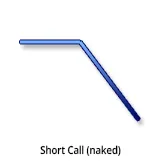
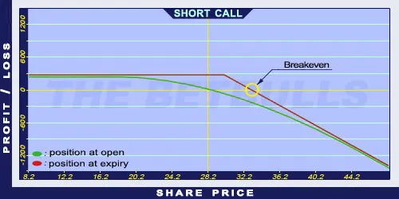

Description and use

Short Call is the sale of a Call option. This position gives the obligation to the option seller (writer) to sell an underlying security at an agreed-upon price until a future date to the option holder if he/she wishes to exercise the option. When writing a Call option, the writer does not expect the price of the underlying security to increase above the strike price. Despite its simplicity, it is considered to be highly risky, because the position has an unlimited risk in case of an increase in the market prices. Therefore, to write Call options is only recommended to experts. The expiration should be one month or less. It should be applied when it is expected that the market is not increasing.
- Type: Bearish
- Transaction type: Credit
- Maximum profit: Limited
- Maximum loss: Unlimited
- Strategy: Basic strategy, Income strategy
Opening the Position
Sell a Call option with a strike price higher than the current market price of the underlying security.
Steps
Entry:
- Write a Call option with higher strike price than the current price of the underlying security (OTM Call). The option should be sold only if the writer thinks that the share price won’t increase above the strike price.
- Write a Call option with a strike price close to the current price of the underlying security (ATM Call). The option should be sold only if the writer thinks that the share price will rather fall than increase.
Exit:
- The writer hopes that the price of the underlying security will decrease or stagnate, so the options will expire worthless and he can keep the premium.
- If the share price increases above the Stop Loss level, the writer can leave the position by buying back the sold option.
Basic Characteristics
- Maximum loss: Increasing as the market rises. It might even be unlimited.
- Maximum profit: Limited. The profit cannot be bigger than the premium received.
- Time decay: Time decay has a positive effect on the Short Call. The closer the option to expiration the more it increases its value. This process accelerates over time, which may be further strengthened by a decrease in the underlying securities volatility.
- Breakeven point: Strike price + premium.
Advantages and Disadvantages
Advantages:
- If implemented correctly and the market is bearish or neutral, the position can be profitable.
Disadvantages:
- Unlimited potential loss if the share price increases.
- Highly risky strategy, not recommended for beginners.
Closing the Position
Buy back the option or wait for expiry worthless. In the latter case, the writer can keep the option premium.
Mitigation of Losses
Determine the value for the Stop Loss based on the underlying security.
Example

Short Call strategy example with ABCD traded for $28.20 on 19.02.2017. The investor sells a Short Call option which has a strike price of $30.00, expires in January 2018, and costs $2.50 (premium).
- Credit: $2.50
- Maximum loss (risk): Unlimited
- Maximum profit: $2.50
- Breakeven point: $32.50